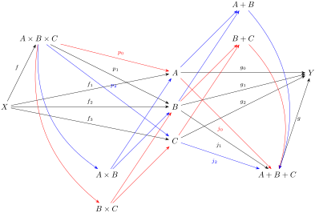
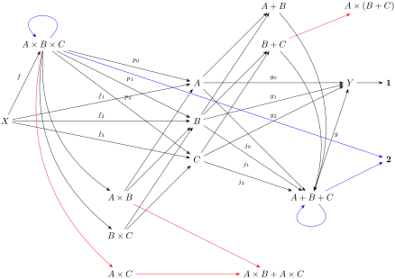

Continued from Section 5.8.
Solution.
I’ve been thinking about these product and sum families, and maybe the benefit of looking at indexed objects is that it allows me to gradually extend these diagrams with the sums and products of objects. Given that I already have \(C_0 = A, C_1 = B, C_2 = C\text{,}\) maybe I can let start adding combinations of these objects under the product or sum as additional objects in our category. In particular, I’m curious about the objects \(C_3 = B+C\text{,}\) \(C_4 = B \times C\) because that pair shows up in both sides of the distributive property. Let’s try adding those to my diagram from last week. I’m going to colorize the graph such that my evalations from the left are in blue and right in red.

Essentially, we’ve defined "triple map" from \(A \times B \times C\) to \(A + B + C\) that corresponds uniquely to our choice of \(f\text{:}\)
\begin{equation*}
X \rightarrow A \times B \times C
\mathrel{\substack{\longrightarrow \\ \longrightarrow \\ \longrightarrow}}
A+B+C \rightarrow Y
\end{equation*}
Since every map in this category \(\mathbf{1}/\mathcal{S}\) is of the form \(\mathbf{1} \rightarrow X \rightarrow Y \rightarrow \mathbf{1}
\text{,}\) we can use this to define a isomorphism from \(A+B+C \longrightarrow A \times B \times C\text{.}\)
\begin{equation*}
A+B+C \rightarrow Y \rightarrow \mathbf{1} \rightarrow X \rightarrow A \times B \times C
\end{equation*}
This, in turn, allows me to define some endomaps on the spaces \(A \times B \times C\) and \(A+B+C\) by the following compositions:
\begin{equation*}
A \times B \times C
\mathrel{\substack{\longrightarrow \\ \longrightarrow \\ \longrightarrow}}
A+B+C \rightarrow Y \rightarrow \mathbf{1} \rightarrow X
\rightarrow
A \times B \times C
\end{equation*}
\begin{equation*}
A+B+C \rightarrow Y \rightarrow \mathbf{1} \rightarrow X
\rightarrow
A \times B \times C
\mathrel{\substack{\longrightarrow \\ \longrightarrow \\ \longrightarrow}}
A+B+C
\end{equation*}
Let’s name these \(A \times B \times C \xrightarrow{e_P}
A \times B \times C\) and \(A + B + C \xrightarrow{e_S}
A + B + C\text{.}\) I’m thinking that since we constructed these by splitting an isomorphism between \(A + B + C\) and \(A \times B \times C\text{,}\) we know they at least satisfy the properties \(e_P^2 = 1_{A \times B \times C}\) and \(e_S^2 = 1_{A+B+C}\text{.}\) Perhaps the question to be asking here is whether or not \(e_P,e_S\) are the respective identity maps or are maps with no fixed point? This allows us to define two unique maps to \(\mathbf{2}\) based on this fixed point property.
Let’s continue by adding these maps to our diagram, and complete it with the other possible sums and products needed for our distributive property:

Maybe I’ve haven’t been paying enough attention to the second condition: the fact that \(\mathbf{0} \rightarrow A \times
\mathbf{0}\) is an isomorphism. Every \(X \xrightarrow{f} Y\) admits an unique map \(X \mathrel{\substack{\longrightarrow \\ \longrightarrow}}X \times Y\) that pairs each \(x_i\) with the respective \(\langle x_i,y_i \rangle\) pair. We also saw in the last exercise that can define a map \(X \times Y \rightarrow \mathbf{2}\) based on whether \(x_i = y_i\) or \(x_i \neq y_i\text{.}\) We know we have a unique “antipodal map” \(\mathbf{2} \xrightarrow{\alpha} \mathbf{2}\) such that \(\alpha^2 = 1_\mathbf{2}\text{.}\) This is important because we could use this map to swap the roles of our terminal and initial object.
I’m thinking that the existence of this map \(\mathbf{0} \rightarrow A \times \mathbf{0}\) is important because it gives us our monoid \(\mathbb{N}\) through composition with itself. This gives us an isomorphism between the following sequences of maps:
\begin{equation*}
\mathbf{0} \rightarrow A \times \mathbf{0}
\rightarrow A \times A \times \mathbf{0}
\rightarrow A \times A \times A \times \mathbf{0}
\rightarrow ...
\end{equation*}
\begin{equation*}
\mathbf{0} \rightarrow \mathbf{1}
\rightarrow \mathbf{2}
\rightarrow \mathbf{3}
\rightarrow ...
\end{equation*}
It seems we should be able to assume an isomorphism \(A \leftrightarrow \mathbb{N}\) here without loss of generality.
If our distributive property is to hold for arbitrary choices of \(A,B,C\text{,}\) what happens if we choose \(B = \mathbf{1}\) and \(C = X\text{?}\) Subsituting into our distributive property gives us \(A \times \mathbf{1} + A \times X = A \times (X + \mathbf{1})\text{.}\) Our result from Exercise 9 says that any terminal object in \(\mathbf{1}/\mathcal{S}\) is also initial, so \(X + \mathbf{1} = X + \mathbf{0} = X\text{.}\)
I think I’m pretty lost again, but here’s my hunch as to whats happening. Both the sum and product need to each have a unique element that functions as the identity map. This gives us unique map from \(\mathbf{2} \rightarrow X
\rightarrow \mathbf{2}\) for \(\mathbf{2} = \{\mathbf{0},\mathbf{1}\}\text{.}\) In the same way we saw a monoid arise from \(\mathbf{0} \rightarrow A \times \mathbf{0}\text{,}\) there should also be dual notion of the monoid based on \(\mathbf{1} \rightarrow B+\mathbf{1}\text{,}\) and some map which swaps the behavior of these two monoids. The invertability of maps in \(\mathbf{1}/\mathcal{S}\) conflicts with this because we know there can’t exist a retraction for \(\mathbf{2} \rightarrow \mathbf{1}\text{.}\)